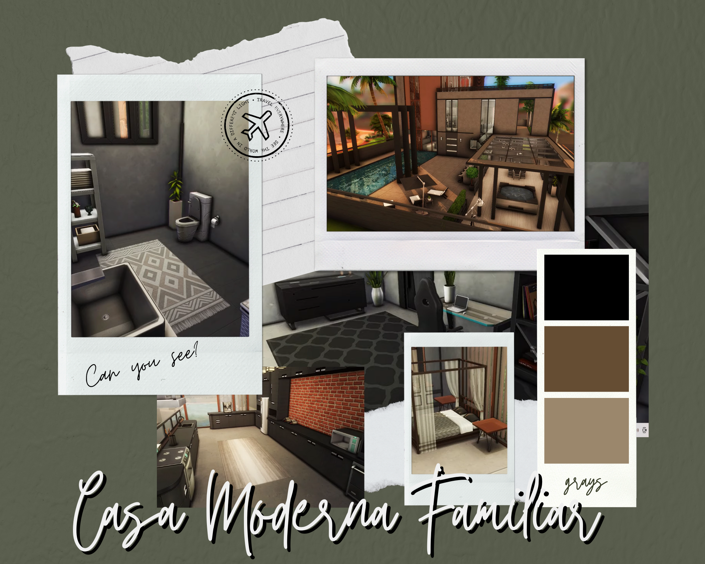
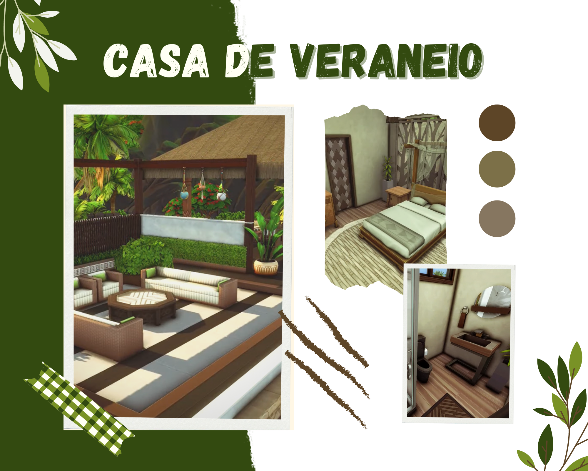

Minhas Casas
Minha casa na praia

No mundo simmer, existe o paraíso Sulani dotado do poder da ilha, e dos espirítos que enchem a vibe de paz bem como conexão com a natureza. Foi esse o lugar que escolhi para construir a mais linda casa de praia que já vista na vida!
Vou mostrar os top 3 locais mais bonitos da casa:
Vista da Jacuzzi para o mar - Depois de um dia de uma gravação cansativa, tiro um período de férias para colocar as ideias no lugar e descansar. A vista estonteante desse lugar acompanhada de um bom livro, vinho tinto e o queijo gorgonzola aliam minha saúde mental!
Área social com churrasqueira - área social com churrasqueira: Este é o local perfeito para comer e rir com os familiares e se tem algo que estimo é a minha família. Amo estar a mesa com eles, rir, comer e aquele churrasquinho.
Jet Ski essa casa tem um ponto para os jet skis, claro que com esse mar todo para explorar não dava para ficar sem algum barco para navegar e quem sabe encontrar tesouros ocultos!

Preciso confessar que a arquiteta dessa casa arrasou, ela não é maravilhosa? Bem... Sulani agora é o meu lugar preferido ( quem vê assim nem pensa que já era antes kkk). Mas enfim, beijos meus amores e tomem bastante água!
Minha casa moderna principal

Oieeee! Hoje estou aqui para mostrar a vocês a casa em que moramos.
Essa é a casa em que moramos, ela é uma casa planejada e pasmém, ela foi construida em apenas 4 meses, credito para o terreno que estava prontinho para a construção e tivemos pouquíssimos problemas. Essa é perfeita em todos os seus detalhes, desde o projeto luminotécnico até o tijolo que foi colocado na parede. Por morarmos em Osasis Spring que sempre está com sensação termica elevada, a piscina foi a aposta mais acertada que tivemos, nesse calor uma piscina e um sorvete caem muito bem.
Nossa casa é composta por 3 pavimentos no onde temos cozinha, lavabo, banheiro social, e uma suite master ( para os meus pais) e duas semi-suites (para mim e meu irmão). A casa é toda em conceito aberto, piso em porcelanato e esquadilhas de vidro que refletem. Vou deixar algumas fotos para vocês terem umas ideia:
Bem bonita não é? Bem o arquiteto e designer de interiores dessa casa foi o PlumbobKingdom, tenho uma foto com ele lá no meu insta, não deixem de conferir o trabalho dele, ele tem excelentes projetos.
É isso por hoje meus amores, um beijo e não esqueçam de tomar água!
Minha Casa de Veraneio

Oie gente! Estou aqui para mostrar a vocês a casa de varaneio, ja faz um bom tempo que consegui essa casa, no entanto ainda não tinha mostrado para vocês.Essa casa é perfeita, fica numa area bem afastada é confortavel, tem uma vista linda, um conceito bem familiar e gostoso e é bem arejada. Ela é um paraiso, nas ferias adoramos vir para cá, é sempre muito calmo e tranquilo.
Meu irmão diz que vir para cá abre a mente dele e fica inspirado, para os meus pais isso aqui é quase o céu, longe do trabalho e das contas já para mim é um excelente lugar para tratar do meu psicologico, sair um pouco da rotina de produção o tempo todo.
Nessa região não chega intenet então a gente desliga de tudo querendo ou não, só assim para o cerébro descansar kkkk.
Nas proximidades temos programas de nado, praias, corrida, passeios e jogos, então não falta coisas para o cerebro se concentrar. Espero que vocês tenham gostado da casa, vou deixar vocês por aqui. Beijos meus amores e não esqueçam de beber água!


Abigail Fernandes
Oi meus amores! Eu sou a Abigail, cinéfila desde a infância, amante de cães e principalmente amo a minha linda husky siberiana Charlotte, livros de romance, arquitetura e design, e café. Depois de assistir Amelie Poulain decidi mudar minha vida por meio da sétima arte, embora eu não more em Del Sol Valley - a casa dos grandes nomes da atuação Simmer - quero chegar ao estrelato pela atuação. Seja bem-vindo ao meu blog!

Inscreva-se
Quer receber todas as novidades do blog para não perder nada? Faça aqui a sua inscrição para ser notificado toda vez que tiver uma novidade!
Redes Sociais